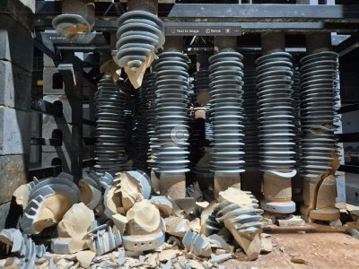
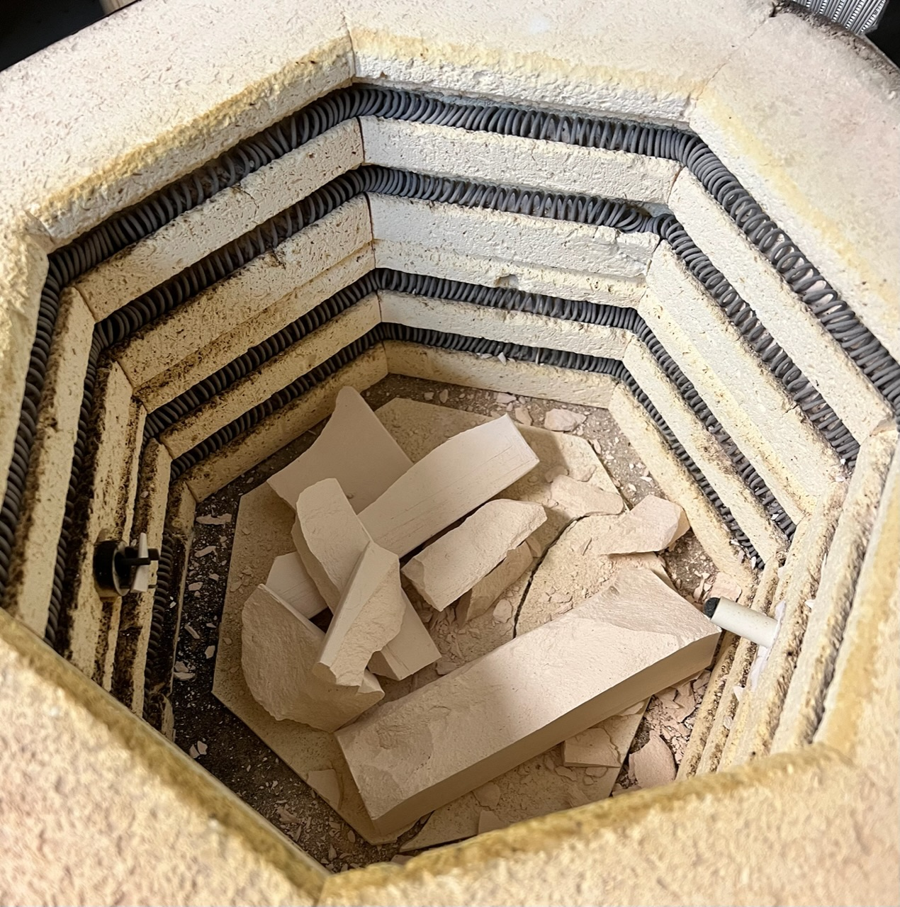

All Temperature Numbers Temperature Listing
80-250C (176-482F)
Pore water removed in clay bodies
Occurs early in the first firing as residual pore (mechanical) water is removed from the clay body. Even after drying, most clay bodies retain some moisture (for example, dust-pressed tile can contain around 1-2%). Heating greenware too rapidly through this range is the most common cause of cracking or even explosive failure, because water vapor cannot escape fast enough through the pore network. For this reason, kilns are often held around 100-120 °C (212-250 °F). Although this is above the boiling point of water, the hold allows remaining pore water to diffuse out safely before firing continues to the dehydroxylation stage of the clay minerals.
The most dangerous temperature can actually be approaching 100°C, because vapor pressure rises rapidly, permeability is still low and remaining water may be concentrated in thicker sections. So, although the temperature can be held at 120°C, the approach to it still needs to be slow enough when firing thicker and heavier ware.
Related Information
When kilns are not candled long enough

This picture has its own page with more detail, click here to see it.
Candling of kilns is the final stage of drying. Driers cannot achieve the temperatures needed to remove all water, so almost all industries rely on early stages of firing to remove it fully. Failures like this are part of the learning curve of every company (because there is always pressure to fire as fast as possible).
Although much more common in heavy clay industries, porcelain insulators are one of the less likely products for this to happen with. This is because machine-forming methods make it possible to use aluminous porcelain bodies having very little clay. Thus, faster drying (with less shrinkage and fewer residual internal stresses) also makes it possible for early stages of firing to be quicker. But there are limits. These insulators are solid, thick and heavy. And they have extreme variations in thickness (thin skirts to solid spindle). So, for even these, early stages of firing must be conducted carefully. For such products, periodic firings of days is often needed.
This is what happens when a kiln is bisque fired too fast

This picture has its own page with more detail, click here to see it.
In bisque kilns ware is being fired for the first time. If pieces are thick and the rate-of-rise is too fast then water (which is turning to steam) cannot escape fast enough. The internal pressure will fracture a piece like this that has not gone through a thermal drier. The schedule to fire this test brick was 150F/hr to 250 and hold 90, 200F/hr to 1640 no hold, 120F/hr to 1888 no hold. The fracture likely happened because the kiln schedule did not allocate enough hold time at 250°F or proceeded too fast to 1000°F. 250°F might sound like too high a temperature to do water smoking at because it is over boiling point, but in practice it does work in industrial kilns and driers with good airflow (which this kiln does not have).
Links
| Temperatures | Dehydroxylation in kaolin, ball clay (450-650) |
| Glossary |
Dehydration
|
 PayPal | No tracking, No ads, No paywall, No transient content! Just organized, concise information constantly updated and improved. Was this helpful? Consider supporting me. |
| By Tony Hansen Follow me on        |  |
Got a Question?
Buy me a coffee and we can talk 

https://digitalfire.com, All Rights Reserved
Privacy Policy